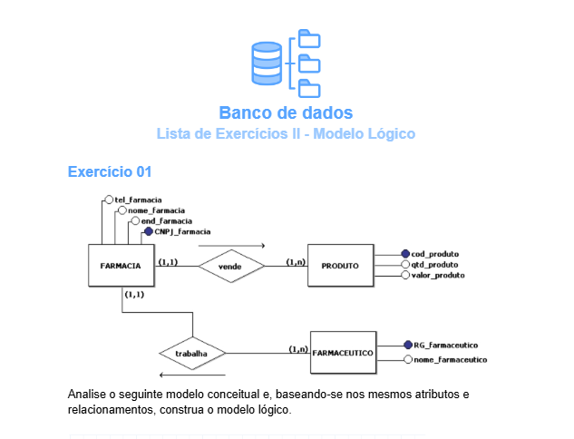

Nessa aula realizamos uma lista
de exercícios sobre o modelo
lógico de banco de dados. Nessa
atividade foi trabalhada as
habilidades H1 e H2.

Modelagem Sistema de Gestão
de Consultório Médico. 2°
Nessa aula realizamos um
exercícios sobre o modelo
lógico e conceitual de banco
de dados como avaliação final
sobre esse conteudo. Nessa
atividade foi trabalhada as
habilidades H1 e H2.
Pesquisa Normalização de Dados. 2°
Nessa atividade tivemos que
realizar uma pesquisa sobre
Normalização de Dados.
Nessa atividade foi
trabalhada a habilidade H3
Banco de Dados Biblioteca. 3°
Nessa atividade praticamos o
uso dos comando DDL e DML do SQl,
para criar um banco de dados
para uma biblioteca.
Nessa atividade foi
trabalhada a habilidade H4
Left e Right JOIN no PgAdmin. 3°
Nessa aula conhecemos os
comandos SQL, Left e Right JOIN e
conhecemos támbem um
pouco da interface do PgAdmin.
Nessa atividade foi
trabalhada a habilidade H4 e H5